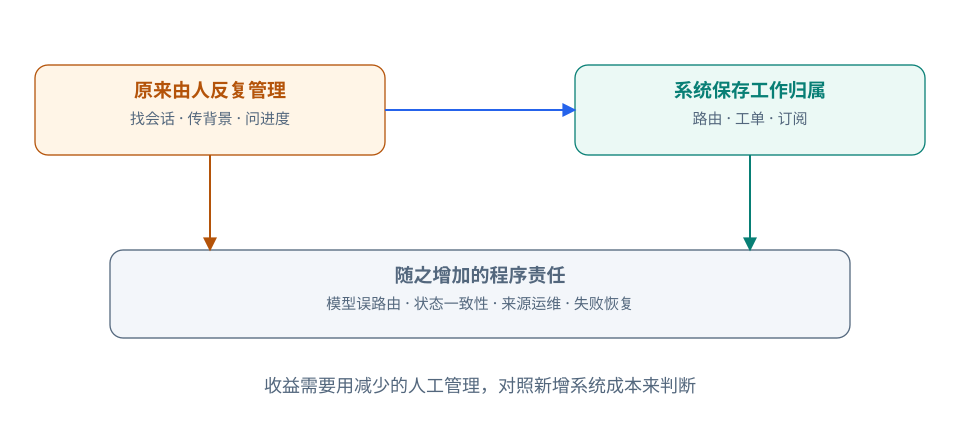
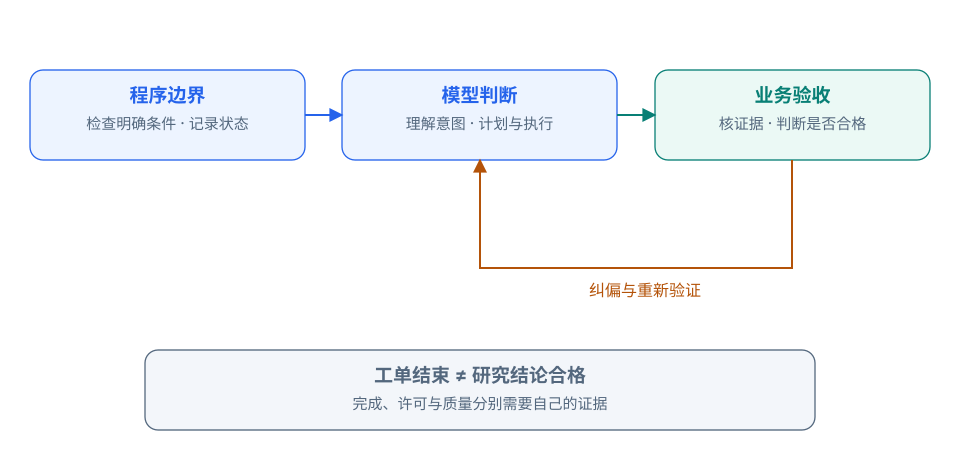

从会话到持续工作
多开几个会话以后，谁来组织工作
一个 Agent 可以在对话里查资料、写代码、调用工具。任务跨过几天、不断收到新消息后，人往往又成了协调者：记住哪件事属于谁，补充背景，判断是否继续，发现进程已经停了。
DeepSeek Super-Agent 的公开研究原型尝试把一部分组织责任放到会话之外。它用工单保存工作，通过路由把新来件接到合适任务，由执行器推进已经授权的工作。这里优化的资源是人的注意力，系统同时增加了需要维护的状态和规则。


接上持续任务，也接下持续责任
把状态从对话移到工单库，可以让程序在重启后找到工作线索；但工单库、模型会话和工作文件不是同一份东西。恢复任务时，系统必须知道哪些状态已保存，哪些动作已经对外发生。
| 组织机制 | 希望减少的人工负担 | 系统新增的责任 |
|---|---|---|
| 路由与工单 | 人记住新消息归属哪件工作 | 避免错投、重复建单和漏传约束 |
| 来源准入与授权 | 每次重新确认谁可以发起什么 | 区分消息抵达、接单与获准执行 |
| 持久化与恢复 | 手动重建跨会话背景 | 处理数据库、会话与外部动作的一致性 |
| 健康检查与看护 | 反复问“还在运行吗” | 区分进程活着、任务有进展和业务结果正确 |
来源准入可以由程序检查，任务是否值得做、该怎样交付仍有模型或人的判断。仓库中的自动合并规则主要通过交付提示表达；需要强制审批时，仍应由分支保护等执行边界承担。

蓝图、公开原型和实验分别说明什么
设计文章解释想建立怎样的持续工作系统；公开代码提供可以核对的具体实现；实验则只回答某个任务设定里的比较。三者不能直接叠成一份“所有能力已实现”的产品清单。

官方文章的合成调度实验使用简化环境，以耗时工具模拟编程工作，每种方案运行 5 次。报告给出完成时间 p95 为 15.7 分钟与中性提示对照的 29.5 分钟。
这些数字说明该设定中的调度比较。它没有测真实代码正确性，也不能与没有运行同样输入的 Hermes、AgentScope 作业务质量排名。本篇核对了公开原文和固定源码，没有复现实验。
查看完整口径、固定版本与原始来源 ↗ Markdown 对应段落先找到反复协调的成本，再决定引入哪一层
持续研究、跨天补充材料、多个独立议题并行，都可能从明确的任务归属、输入队列和恢复机制中受益。一次短问答通常不需要先增加路由层；稳定的固定报表也可以由脚本调度。
可以从一个具体任务开始：保存原始目标和已获授权，记录新消息怎样进入任务，制造一次中断，再检查工作能否接续。最后同时看人工协调、系统维护、调用费用和结果质量。
如果真正的困难只是资料找不到，先把资料入口和状态记录做好。如果人每天在多件工作之间重新解释背景，才更值得评估路由和持续执行。架构复杂度应当对应真实消失的负担。
会话之外的组织，让更多工作有机会持续推进。它的价值要由减少的协调与恢复成本，以及最终成果共同证明。
查看采用条件与反场景 ↗展开完整深入版
为什么 Agent 需要会话之外的组织：DeepSeek Super-Agent 的设计取舍
先给判断：Super-Agent 试图减少人管理会话和推进任务的负担，代价是系统要承担路由、授权、持久化与恢复的复杂度。 是否有收益，取决于任务是否跨事件持续变化，以及系统省下的人工管理能否抵过新增协调成本。
本文以公开研究原型说明持续工作组织的取舍。该原型不是正式 DeepSeek 产品，也不等同于官方蓝图中的全部能力；具体采用仍须按任务验证。
一、总：原来卡在哪，设计想改变什么
1.1 模型能做事以后，瓶颈可能转到人
一次对话中，模型能调用工具完成复杂工作；若同时开多个会话，每个都要人记背景、传新要求、判断是否结束，就把协调责任留给了人。官方文章将目标概括为连续交互、并行产出、主动响应和持续在线。官方文章
“更少打扰”在原型中有具体表现：只在有授权时工作，只在结果可用、需要决定或无法继续时发消息；面板突出待人工处理项。普通进度留在工单，不等于不留记录。工作原则、面板
人的注意力是这里优化的资源，不是一个已经测得的省时比例。普通进度少一点可能让界面更安静，也可能掩盖卡住的工作，所以静默要与可查询状态和健康检查一起设计。

1.2 它是什么：工作组织方案，质量仍需另验
路由器（Router）负责让来件找到工作，执行器（Executor）推进已授权任务。独立工作会话可以减少不同任务互相干扰，但上下文更干净不代表事实必然更准；新的路由也可能分错任务、漏传约束。
后文用到的运行底座（Harness）承载模型、会话与工具；配置档（profile）组织一组运行配置。来源（Source）将外部消息译成触发事件（Trigger），执行会话（Worker）围绕工单做事。这些只是职责名称，不各自承诺新的质量或安全保证。
类比流水线时要划边界：程序能管理“先登记后执行”，但模糊意图的理解和结果是否满足人要求，都不完全等于流水线合格判定。因此业务验收仍需要题目、证据与人类责任。
二、分：五组设计取舍怎样形成
2.1 主会话与执行会话分层：保交互，增加协调
长任务如果与所有新消息挤在同一会话里，新要求会打断执行，或者排队等很久。原型让主会话路由，具体工单由执行会话做事；长命令转后台，人类追问有优先槽。执行
收益是新来件和原任务执行可以并行组织，代价是多了一次路由理解、多个会话和结果汇总。原型 Router 仍有短时 shell；“分层”描述职责与工具差别，不能简化为一个无工具大脑指挥所有工作。
2.2 先准入再研判：降低无关工作，也要维护规则
程序先查来源、身份和模式，模型再判断语义。这样可以拒绝明显无资格的新工作，不把每条话都当任务。原型默认观察推断工作，记录“本来会接单”而不派工。授权
观察模式仍会用模型研判，因此有调用费用；它主要验证接单行为，不能证明后续执行、重启和交付都可靠。规则写得太宽会误接，太窄会漏掉有价值工作，这是业务校准问题。
2.3 订阅直送：省掉重复归属判断，也保留不可信输入
同一讨论的补充材料投给原执行器，可以减少用户重复解释。订阅（Subscription）只传上下文；原工单的授权范围并不扩大。是否超出范围需要执行器理解，程序保存交回与归属。领域模型
代价是执行器会接触未必可信的评论、检查结果和引用材料。需要将输入当数据，并在工具侧限制可执行动作；不能把“来源已接入”当成防注入或材料真实性保证。
2.4 显式状态：方便恢复，增加数据与事务问题
若“做没做、等什么”只在模型上下文，进程重启会失去可靠线索。原型把工单、授权、输入、决定、待办和回执持久化，外部动作在事务后执行。架构与持久化
代价是要管理数据库迁移、历史增长和外部重复动作。工单库、Harness 会话和工作文件还不是一个存储；要恢复一项工作，需要知道哪些状态在库里、哪些在环境中。仅保存对话，或仅保存一份 SQLite，都不能代表完整恢复。
2.5 业务要求留文字：适应团队，也留下强制性差别
自动合并要求写进交付提示词，改动容易，适应不同团队。官方却明确，原型程序没有合并专用判定逻辑。需要强制审批时，应依赖仓库分支保护或其他执行门。合并规则
这解释了为何不能把“提示词有规定”写成“代码已经保证”。接单身份由程序校验，是否值得做和怎么交付有模型判断；高影响动作还需要外部强制边界。

三、总：蓝图、原型和实验分别证明什么
3.1 文章蓝图比公开原型范围大
原型 README 明确：公开代码经过调整，与内部系统及文章并不完全相同，部分设计尚未实现。原文的计算、状态、环境分离，与公开部署中的数据库、会话、工作目录，不能不加条件地画等号。README
| 文章方向 | 公开原型可核对应 | 仍须单独核查 |
|---|---|---|
| 分层与并发 | 主会话、工单执行会话、后台工作 | 路由质量与负载表现 |
| 事件驱动 | Source、Trigger、准入、订阅 | 新来源完整契约和规则 |
| 执行中继续交互 | 输入队列、后台完成事件、优先槽 | 延迟、工具能否及时停止 |
| 状态与环境分离 | 显式工单库、Harness 会话、工作目录 | 跨设备迁移和环境一致性 |
| 独立看护 | 另一个 profile 中的定时状态检查配方 | 完整 Watchdog 的进展判断与偏离纠正 |
看护者（Watchdog）是官方文章中独立于主系统的监督会话，会判断基础设施和工作推进。公开配方检查服务状态并按结果恢复，且尊重人工停止；这有借鉴价值，却不能当成整个蓝图已实现。官方文章第6节、部署

3.2 实验支持调度比较，不支持业务质量排名
官方英文文章于 2026-11-01 发布，注明为中文原文的机器翻译。第7节使用合成负载与简化环境，每个方案运行5次，编程工作以只消耗时间的工具模拟。报告中 Super-Agent 完成时间 p95 为15.7分钟，中性提示的单会话加子代理为29.5分钟。原文与口径
这个实验中，两层安排所列的完成时间p95更低。它不能证明实际代码更正确、研究更准确，也不能与没有跑同样输入的 Hermes、AgentScope 作性能排名。官方设计文章的公开来源与固定原型分别列在文末；本篇没有复现实验。
3.3 优缺点必须对着替代做法说
| 替代安排 | 显式工作组织的收益 | 增加的代价 |
|---|---|---|
| 人工管理多个会话 | 减少找背景与问归属 | 路由、状态与渠道维护 |
| 单一模型循环 | 可分别组织多件持续工作 | 多一层模型研判与协调调用 |
| 固定脚本 | 能理解中途变化的自然语言要求 | 不确定性与语义验收成本 |
所以收益要同时看人和系统：少发几条通知不等于少了人工工作，Worker 变多不等于完成更快。要把重试、纠偏和最后验收都算进去。
四、分：落到研究任务，哪些设计值得验证
4.1 适用场景和三个反场景
跨天研究、多次补材料、多个独立议题并行，符合持续工作组织的约束。可先用工单保存研究范围，用订阅连接新证据，用结构化问题请求裁决；这属于迁移建议，不是原型现成的情报功能。
一次短问答不必先加路由层；固定统计报表不必每轮交模型决定流程；高影响自动发布不应只凭模型报告放行。这三个反场景分别更适合简单调用、脚本调度和外置审批。
4.2 采用条件与失败例子
构造场景：系统已有两条独立议题，一个研究部署变化，一个整理产品资料。材料更新同时命中两者，订阅可以分别投递；但是否应合并结论、是否属于独立证据，仍需分析方法和来源治理。并发改善组织，不自动解决证据相互依赖。
建议先验证“原来人在哪些步骤反复管理”，再决定引入哪层。若实际只需要保存范围和引用，先做单执行器的任务记录；出现大量跨事件纠偏时，再评估路由与多会话。是否迁移已有系统，还需比较接入成本与实际收益。
4.3 追问树与坦白表
A1：为何把任务从会话分出来？ 减少人手工管理归属。A2：会不会只是把成本转移给程序？ 会，所以要量化维护和调用。A3：怎样判断值得？ 看相同任务的总人机成本与质量。依据：1.1、2.1、3.3。
B1：观察模式证明什么？ 接单判断在回放中的表现。B2：能证明持续运行吗？ 不能。B3：还缺什么？ 并发、交付和恢复故障实验。依据：本篇 2.2 与公开原型 README。
加分题：原文实验快了一些，能推出研究结论更准确吗？不能，试验任务与质量指标不同。
已核官方文章、固定原型与相关源码，未复现实验，也未测本文涉及的实际业务节省时间或质量。因此文中取舍是有证据的分析，迁移采用建议仍待验证。
下一步
采用前应把每项取舍转换为故障检查，并用同一起点的实际任务比较人工协调、恢复与最终质量。
公开版本与补核范围
公开原型固定在 8c32a9dc5d72c033816c6a8110b37f40cf94fba4。2026-11-13 定点核对 README、执行规则、部署看护配方及官方设计文章。官方文章的合成调度实验不代表真实编码质量；本文没有复现实验，也不把它与未跑同样任务的产品作性能排名。